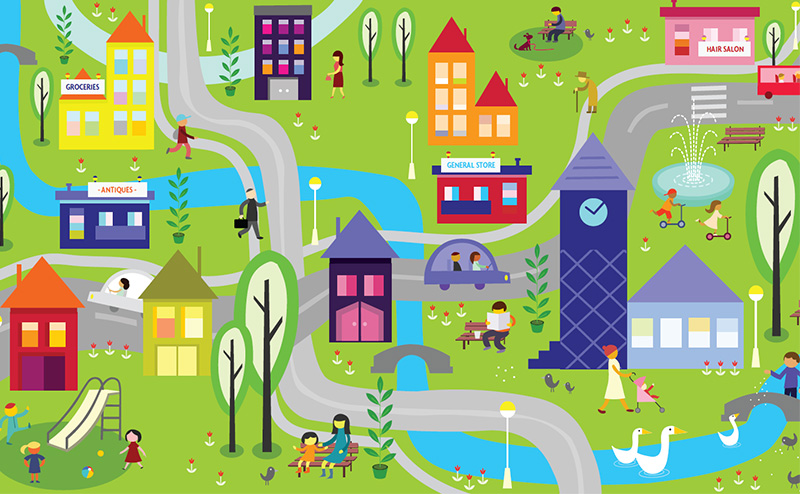

Weather
Weather is what we observe outside about the sun, cloud, rain, temperature and wind. The weather may change from time to time and from day to day. The study of weather is called meteorology.
Types of weather:
Everyday we receive weather news on radio and television.
To obtain information about the weather, different instruments are used.
A thermometeris used to measure temperature.
A wind vane is used to show wind direction.
Maps
The sun rises in the east. At midday, the sun is in the middle. In the afternoon, the sun always sets in the west.
Locality
The locality is the place or local area where we live. Schools and other buildings such as houses and shops are found there. Many people live and work in the locality.
Types of weather:

In villages and towns, there are busy roads. Many vehicles use these roads. We should be very careful on the road.
Road signs:
Back